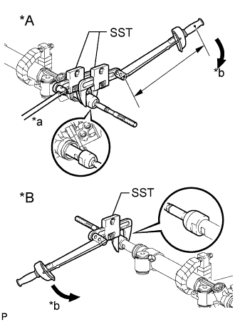
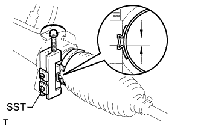
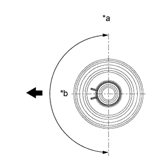

РУЛЕВОЙ МЕХАНИЗМ > ПОВТОРНАЯ СБОРКА |
| 1. УСТАНОВИТЕ РУЛЕВУЮ ТЯГУ В СБОРЕ |
Временно установите 2 рулевых тяги на рейку рулевого механизма.
Заполните шаровые шарниры рулевых тяг универсальной консистентной смазкой.
|  |
Используя SST, установите рулевую тягу (с правой стороны) на рейку рулевого механизма.
| *A | С левой стороны |
| *B | С правой стороны |
| *a | Удерживайте |
| *b | Поверните |
Используя SST и гаечный ключ, установите рулевую тягу (с левой стороны) на рейку рулевого механизма.
| 2. УСТАНОВИТЕ ЗАЩИТНЫЙ ЧЕХОЛ РУЛЕВОГО МЕХАНИЗМА № 2 |
Нанесите силиконовую консистентную смазку на внутреннюю поверхность небольшого отверстия в чехле.
Установите 2 защитных чехла в канавку на кожухе рейки.
| 3. УСТАНОВИТЕ ЗАЩИТНЫЙ ЧЕХОЛ РУЛЕВОГО МЕХАНИЗМА № 1 |
| 4. УСТАНОВИТЕ ПРАВЫЙ ЗАЖИМ ЗАЩИТНОГО ЧЕХЛА РУЛЕВОГО МЕХАНИЗМА |
|  |
С помощью SST установите новый зажим защитного чехла, как показано на рисунке.
| 5. УСТАНОВИТЕ ЛЕВЫЙ ЗАЖИМ ЗАЩИТНОГО ЧЕХЛА РУЛЕВОГО МЕХАНИЗМА |
| 6. УСТАНОВИТЕ ПРАВЫЙ ФИКСАТОР ЗАЩИТНОГО ЧЕХЛА РУЛЕВОГО МЕХАНИЗМА |
|  |
С помощью плоскогубцев установите фиксатор защитного чехла.
| *a | Вверх |
| *b | 180° |
 | Передняя сторона автомобиля |
| 7. УСТАНОВИТЕ ЛЕВЫЙ ФИКСАТОР ЗАЩИТНОГО ЧЕХЛА РУЛЕВОГО МЕХАНИЗМА |
| 8. УСТАНОВИТЕ ВЫПУСКНУЮ ОБРАТНУЮ ТРУБУ РУЛЕВОГО МЕХАНИЗМА |
С помощью разрезной головки установите обратную трубу на рулевой механизм.
| 9. УСТАНОВИТЕ НАГНЕТАТЕЛЬНУЮ ТРУБКУ ПОВОРОТА |
Смажьте жидкостью для механизма рулевого управления 2 новых кольцевых уплотнения. С помощью разрезной головки установите 2 кольцевых уплотнения и нагнетательную трубку левого поворота.
Смажьте жидкостью для механизма рулевого управления 2 новых кольцевых уплотнения. С помощью разрезной головки установите 2 кольцевых уплотнения и нагнетательную трубку правого поворота.
| 10. УСТАНОВИТЕ НАКОНЕЧНИК ЛЕВОЙ РУЛЕВОЙ ТЯГИ В СБОРЕ |
Совместите метки на тяге и наконечнике и временно закрепите тягу контргайкой.
| 11. УСТАНОВИТЕ ПРАВЫЙ НАКОНЕЧНИК ТЯГИ В СБОРЕ |